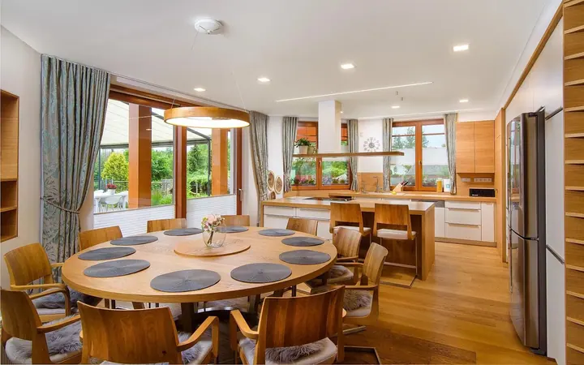

01 / 04
Svatební fotografie
Celý svatební den od příprav po večerní zábavu. Nearanžuji a neřídím, zachycuji přirozené emoce tak, jak se opravdu dějí.
Zeptat se na termín→


Svatby přirozené, upřímné a krásné
Zeptat se na termín →(01) Ahoj
Jmenuji se Pavel Růžička a od roku 2009 fotím svatby v Praze i všude, kam mě pozvete. Nic nehraji a nic po vás nechci hrát, jen zachycuji emoce a lidi, kteří se mají rádi. Vedle svateb fotím také portréty pro firmy , akce a interiéry.
(02) Co fotím
01 / 04
Celý svatební den od příprav po večerní zábavu. Nearanžuji a neřídím, zachycuji přirozené emoce tak, jak se opravdu dějí.
Zeptat se na termín→02 / 04
Portréty pro firmy, weby a profesní profily. Klidné, přirozené a s výrazem, který k vám sedí.
Zeptat se na termín→03 / 04
Konference, předávání cen, firemní turnaje i společenské večery. Fotím nenápadně a hlídám momenty, na kterých záleží.
Zeptat se na termín→Dále nabízím
Světlé a přehledné fotky bytů, domů i komerčních prostor, které ukážou interiér v nejlepším světle.
↗(03) Portfolio
Kliknutím fotku zvětšíte · fotografie jsou ilustrační
(04) Postup
Od první zprávy po hotovou galerii.
Krok 1 z 4
Napište mi nebo zavolejte, kdy a kde se berete. Hned vám řeknu, jestli je datum ještě volné.
Krok 2 z 4
Probereme průběh dne, místo a co je pro vás důležité. Když budete chtít, rád vám doporučím i ověřené vizážistky, DJe nebo kapelu.
Krok 3 z 4
Jsem s vámi od příprav po večerní zábavu. Nenápadně, bez dlouhého aranžování, abyste si den mohli opravdu prožít.
Krok 4 z 4
Z tisíců snímků vyberu a upravím ty nejlepší. V průměru dostanete okolo 350 hotových fotografií z celého dne.
Méně strnulých póz, víc života.
(05) Za objektivem
Své první svatby jako profesionál jsem fotil v roce 2009. Od té doby jsem viděl svatby za hubičku i za milion, vysmáté, klidné, rozjeté i trochu ujeté, na zámku, na skále i v kempu. Bylo to pestré jako život sám.
Fotograf by podle mě měl svatbu zachytit, ne ji řídit. Nebudu vás dlouze aranžovat před dortem ani vám určovat, jak se máte obejmout. Výsledkem je méně strnulých póz a víc radosti a života. Za celý den vyfotím často přes 2000 snímků a vy dostanete v průměru okolo 350 hotových fotografií.
Jsem manžel, táta dvou dětí, bývalý burzovní makléř, amatérský buddhista a mistr vtipů, které nikdo nepochopí. Mám rád citronovou zmrzlinu, plážový volejbal, Forresta Gumpa, skromnost a laskavost. A samozřejmě krásné svatby.
Pavel
Pavel Růžička · Svatební a firemní fotograf
Jako profesionál fotím svatby od roku 2009. Fotil jsem malé i velké svatby, na zámku, na skále i v kempu.
Jen minimálně. Mým stylem je zachycovat přirozené emoce a okamžiky, ne žádat po vás, abyste je pro foťák hráli.
Za celý den vyfotím často přes 2000 snímků a vy z nich dostanete v průměru okolo 350 hotových fotografií.
Celodenní kompletní servis v hlavní svatební sezoně vycházel v roce 2024 od 15 000 Kč podle termínu. Aktuální cenu vám rád pošlu na míru.
Určitě. Rád vám poskytnu reference od konkrétních párů, jejichž svatbu jsem fotil.